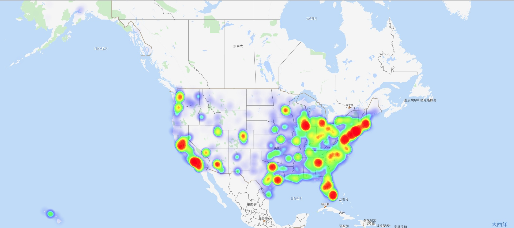
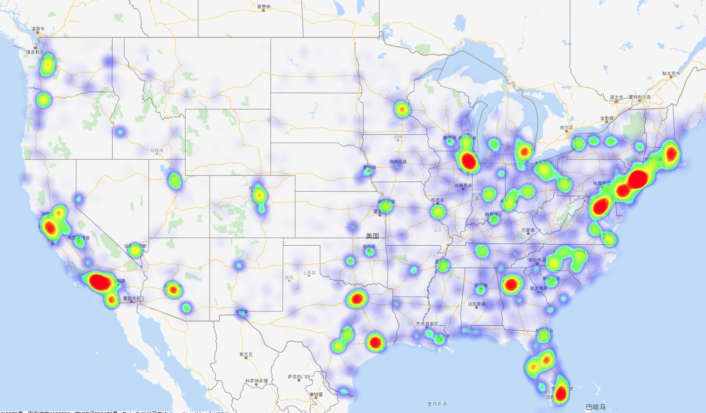
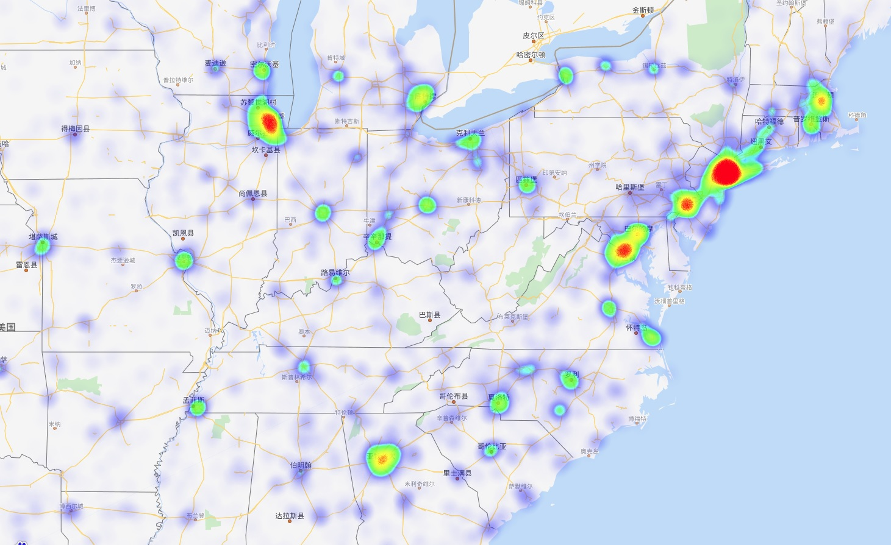

Access Network Location of USA
Distribution of Internet Users
Published: 2019-02-01 20:51
1. Overview of the full USA
Data Size: 145868575 from 46927 machines

2. Overview of the main-land

3. Detail of the North-East
The largest number of visitors comes from New York, Washington, Chicago, Philadelphia, Boston and Atlanta.
